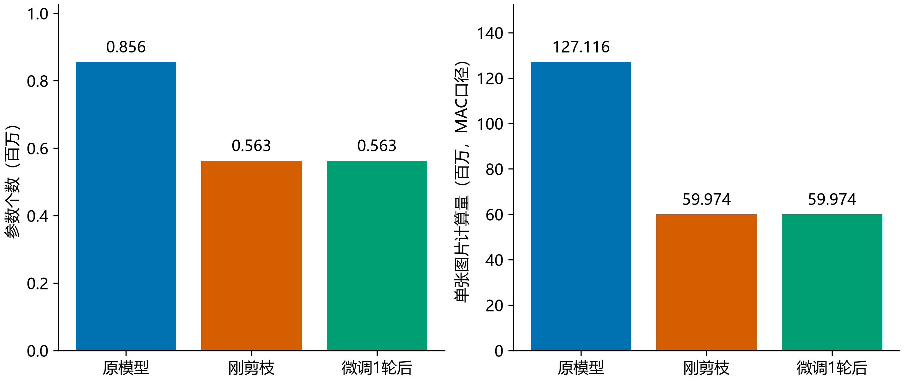
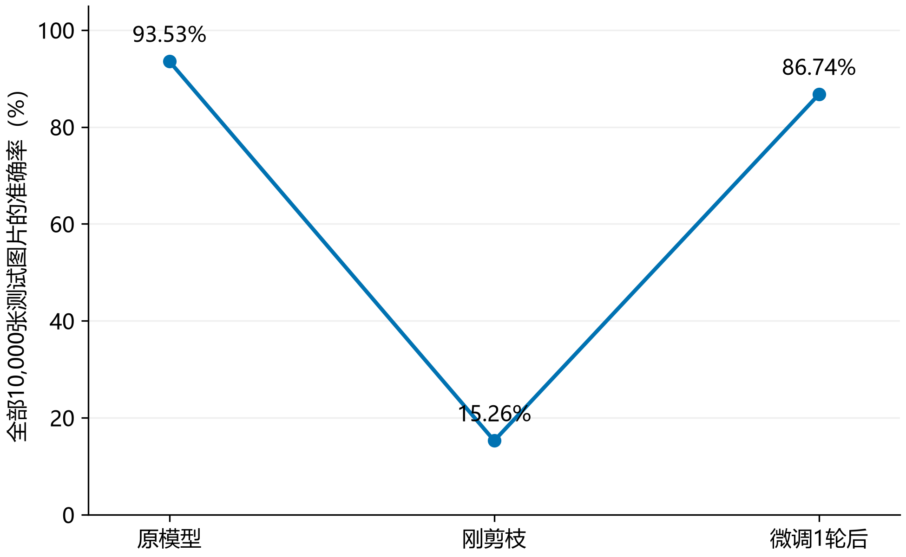

实验学习 · CIFAR-10 · 本机实测
模型变小以后，还能认对图片吗？
已完成：作者权重评估 → 依赖图剪枝 → 1轮微调 → 独立进程重载。
本轮属于流程验证，完整论文结果仍需进一步复现。
| 模型阶段 | 准确率 | 参数个数 | 百万MAC口径计算量/张 |
|---|
| 作者预训练模型 | 93.53% | 855,770 | 127.116 |
| 刚剪枝的模型 | 15.26% | 562,878 | 59.974 |
| 微调后的模型 | 86.74% | 562,878 | 59.974 |
先看模型缩小了多少
参数减少34.23%，计算量减少52.82%。参数是模型中要保存和学习的数值；计算量是处理一张图片所需运算的估计。

再看识别能力怎样变化
每个阶段都在相同的10,000张测试图片上评价。微调是继续训练已剪枝的模型，让剩下的参数重新适应任务；本轮变化为+71.48个百分点。

你应该学会的四件事
- 基线给后续改动提供参照。
- 结构化剪枝真正删除通道；相关层需要一起调整。
- 微调可能修复精度损失，但必须实测。
- 计算量比值2.120不等于推理加速倍数，本轮没有测速。
这次验证的边界
只有一个随机种子、1轮微调、没有稀疏训练。输入为32×32彩色图片；训练集50,000张，每轮实际训练49,920张。它还不是工业缺陷检测，也没有做RK3568部署。独立进程重载固定8张真实图片的输出完全一致：True。
详细设置与学习说明 · 原始结果 · 重载验证 · 运行方法